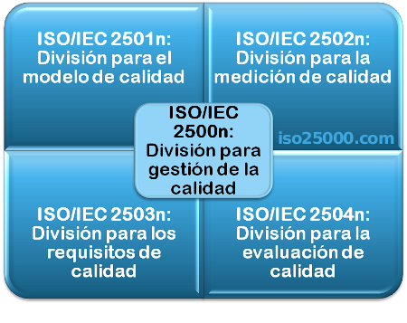

ISO 25000
La Norma ISO 25000, proporciona una guía para el uso de las series de estándares internacionales llamados requisitos y Evaluación de Calidad de Productos Software (SQuaRE). La norma establece criterios para la especificación de requisitos de calidad de productos software, sus métricas y su evaluación, e incluye un modelo de calidad para unificar las definiciones de calidad de los clientes con los atributos en el proceso de desarrollo.
El objetivo general de la creación del estándar ISO 25000 SQuaRE (Software Product Quality Requeriments and Evaluation) es organizar, enriquecer y unificar las series que cubren dos procesos principales: especificación de requerimientos de calidad del software y evaluación de la calidad del software, soportada por el proceso de medición de calidad del software.
Ventajas
- Alinea los objetivos del software con las necesidades reales que se le demandan.
- Evitando ineficiencias y maximizando la rentabilidad y calidad del producto de software. Por otro lado, certificar el software aumenta la satisfacción del cliente y mejora la imagen de la empresa.
- Cumplir los requisitos contractuales y demostrar a los clientes que la calidad del software es primordial.
- El proceso de evaluaciones periódicas ayuda a supervisar continuamente el rendimiento y la mejora.
La familia de normas ISO/IEC 25000

ISO/IEC 25000, conocida como SQuaRE (System and Software Quality Requirements and Evaluation), es una familia de normas que tiene por objetivo la creación de un marco de trabajo común para evaluar la calidad del producto software
La familia ISO/IEC 25000 es el resultado de la evolución de otras normas anteriores, especialmente de las normas ISO/IEC 9126, que describe las particularidades de un modelo de calidad del producto software, e ISO/IEC 14598, que abordaba el proceso de evaluación de productos software. Esta familia de normas ISO/IEC 25000 se encuentra compuesta por cinco divisiones.
ISO/IEC 2500n – División de Gestión de Calidad
Las normas que forman este apartado definen todos los modelos, términos y definiciones comunes referenciados por todas las otras normas de la familia 25000. Actualmente esta división se encuentra formada por:
- ISO/IEC 25000 - Guide to SQuaRE: contiene el modelo de la arquitectura de SQuaRE, la terminología de la familia, un resumen de las partes, los usuarios previstos y las partes asociadas, así como los modelos de referencia.
- ISO/IEC 25001 - Planning and Management: establece los requisitos y orientaciones para gestionar la evaluación y especificación de los requisitos del producto software.
ISO/IEC 2501n – División de Modelo de Calidad
Las normas de este apartado presentan modelos de calidad detallados incluyendo características para calidad interna, externa y en uso del producto software. Actualmente esta división se encuentra formada por:
- ISO/IEC 25010 - System and software quality models: describe el modelo de calidad para el producto software y para la calidad en uso. Esta Norma presenta las características y subcaracterísticas de calidad frente a las cuales evaluar el producto software.
- ISO/IEC 25012 - Data Quality model: define un modelo general para la calidad de los datos, aplicable a aquellos datos que se encuentran almacenados de manera estructurada y forman parte de un Sistema de Información.
ISO/IEC 2502n – División de Medición de Calidad
ISO/IEC 25020 - Measurement reference model and guide: presenta una explicación introductoria y un modelo de referencia común a los elementos de medición de la calidad. También proporciona una guía para que los usuarios seleccionen o desarrollen y apliquen medidas propuestas por normas ISO.
- ISO/IEC 25020 - Measurement reference model and guide: presenta una explicación introductoria y un modelo de referencia común a los elementos de medición de la calidad. También proporciona una guía para que los usuarios seleccionen o desarrollen y apliquen medidas propuestas por normas ISO.
- ISO/IEC 25021 - Quality measure elements: define y especifica un conjunto recomendado de métricas base y derivadas que puedan ser usadas a lo largo de todo el ciclo de vida del desarrollo software.
- ISO/IEC 25022 - Measurement of quality in use: define específicamente las métricas para realizar la medición de la calidad en uso del producto.
- ISO/IEC 25023 - Measurement of system and software product quality: define específicamente las métricas para realizar la medición de la calidad de productos y sistemas software.
- ISO/IEC 25024 - Measurement of data quality: define específicamente las métricas para realizar la medición de la calidad de datos.
ISO/IEC 2503n – División de Requisitos de Calidad
Las normas que forman este apartado ayudan a especificar requisitos de calidad que pueden ser utilizados en el proceso de elicitación de requisitos de calidad del producto software a desarrollar o como entrada del proceso de evaluación. Para ello, este apartado se compone de:
- ISO/IEC 25030 - Quality requirements: provee de un conjunto de recomendaciones para realizar la especificación de los requisitos de calidad del producto software.
ISO/IEC 2504n – División de Evaluación de Calidad
Este apartado incluye normas que proporcionan requisitos, recomendaciones y guías para llevar a cabo el proceso de evaluación del producto software. Esta división se encuentra formada por:
- ISO/IEC 25040 - Evaluation reference model and guide: propone un modelo de referencia general para la evaluación, que considera las entradas al proceso de evaluación, las restricciones y los recursos necesarios para obtener las correspondientes salidas.
- ISO/IEC 25041 - Evaluation guide for developers, acquirers and independent evaluators: describe los requisitos y recomendaciones para la implementación práctica de la evaluación del producto software desde el punto de vista de los desarrolladores, de los adquirentes y de los evaluadores independientes.
- ISO/IEC 25042 - Evaluation modules: define lo que la Norma considera un módulo de evaluación y la documentación, estructura y contenido que se debe utilizar a la hora de definir uno de estos módulos.
- ISO/IEC 25045 - Evaluation module for recoverability: define un módulo para la evaluación de la subcaracterística Recuperabilidad (Recoverability).
La división de extensión de SQuaRE (ISO/IEC 25050 a ISO/IEC 25099) se reserva para normas o informes técnicos que aborden dominios de aplicación específicos o que puedan ser utilizados para complementar otras normas de la familia SQuaRE.
Equipo del Proyecto
- Héctor Vásquez
- Pedro Ramos
- Ramon Castro